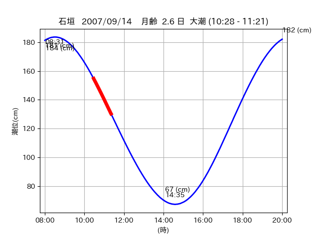
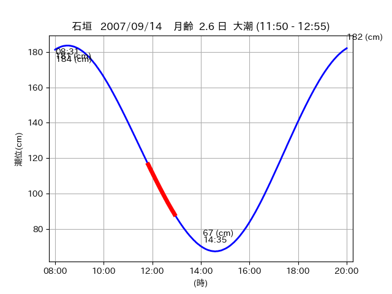

<!DOCTYPE html>
<html>
<head>
    
    <meta http-equiv="content-type" content="text/html; charset=UTF-8" />
    
        <script>
            L_NO_TOUCH = false;
            L_DISABLE_3D = false;
        </script>
    
    <style>html, body {width: 100%;height: 100%;margin: 0;padding: 0;}</style>
    <style>#map {position:absolute;top:0;bottom:0;right:0;left:0;}</style>
    <script src="https://cdn.jsdelivr.net/npm/leaflet@1.9.3/dist/leaflet.js"></script>
    <script src="https://code.jquery.com/jquery-3.7.1.min.js"></script>
    <script src="https://cdn.jsdelivr.net/npm/bootstrap@5.2.2/dist/js/bootstrap.bundle.min.js"></script>
    <script src="https://cdnjs.cloudflare.com/ajax/libs/Leaflet.awesome-markers/2.0.2/leaflet.awesome-markers.js"></script>
    <link rel="stylesheet" href="https://cdn.jsdelivr.net/npm/leaflet@1.9.3/dist/leaflet.css"/>
    <link rel="stylesheet" href="https://cdn.jsdelivr.net/npm/bootstrap@5.2.2/dist/css/bootstrap.min.css"/>
    <link rel="stylesheet" href="https://netdna.bootstrapcdn.com/bootstrap/3.0.0/css/bootstrap-glyphicons.css"/>
    <link rel="stylesheet" href="https://cdn.jsdelivr.net/npm/@fortawesome/fontawesome-free@6.2.0/css/all.min.css"/>
    <link rel="stylesheet" href="https://cdnjs.cloudflare.com/ajax/libs/Leaflet.awesome-markers/2.0.2/leaflet.awesome-markers.css"/>
    <link rel="stylesheet" href="https://cdn.jsdelivr.net/gh/python-visualization/folium/folium/templates/leaflet.awesome.rotate.min.css"/>
    
            <meta name="viewport" content="width=device-width,
                initial-scale=1.0, maximum-scale=1.0, user-scalable=no" />
            <style>
                #map_87a265b4e5d2b0278952f7efc606f291 {
                    position: relative;
                    width: 2048.0px;
                    height: 1600.0px;
                    left: 0.0%;
                    top: 0.0%;
                }
                .leaflet-container { font-size: 1rem; }
            </style>
        
</head>
<body>
    
    
            <div class="folium-map" id="map_87a265b4e5d2b0278952f7efc606f291" ></div>
        
</body>
<script>
    
    
            var map_87a265b4e5d2b0278952f7efc606f291 = L.map(
                "map_87a265b4e5d2b0278952f7efc606f291",
                {
                    center: [24.402, 124.268],
                    crs: L.CRS.EPSG3857,
                    ...{
  "zoom": 12,
  "zoomControl": true,
  "preferCanvas": false,
}

                }
            );

            

        
    
            var tile_layer_8e0235e9edbc367ac50891c5075660fe = L.tileLayer(
                "https://cyberjapandata.gsi.go.jp/xyz/seamlessphoto/{z}/{x}/{y}.jpg",
                {
  "minZoom": 0,
  "maxZoom": 18,
  "maxNativeZoom": 18,
  "noWrap": false,
  "attribution": "\u5730\u7406\u9662\u5730\u56f3",
  "subdomains": "abc",
  "detectRetina": false,
  "tms": false,
  "opacity": 1,
}

            );
        
    
            tile_layer_8e0235e9edbc367ac50891c5075660fe.addTo(map_87a265b4e5d2b0278952f7efc606f291);
        
    
            var marker_cefb2c876b91ab7dad274846aedae94d = L.marker(
                [24.4355, 124.2653],
                {
}
            ).addTo(map_87a265b4e5d2b0278952f7efc606f291);
        
    
            var icon_ddc3dd10a98a42e755e705d7f325f4e4 = L.AwesomeMarkers.icon(
                {
  "markerColor": "orange",
  "iconColor": "white",
  "icon": "info-sign",
  "prefix": "glyphicon",
  "extraClasses": "fa-rotate-0",
}
            );
        
    
        var popup_e01e68e97dd56209e667e09eb44c4af7 = L.popup({
  "maxWidth": "100%",
});

        
            
                var html_eee753ea571b25430894103080b1a677 = $(`<div id="html_eee753ea571b25430894103080b1a677" style="width: 100.0%; height: 100.0%;"><table><tr><td></td></tr><tr><td><center>20070914 No.1 </center></table></td></tr></table</div>`)[0];
                popup_e01e68e97dd56209e667e09eb44c4af7.setContent(html_eee753ea571b25430894103080b1a677);
            
        

        marker_cefb2c876b91ab7dad274846aedae94d.bindPopup(popup_e01e68e97dd56209e667e09eb44c4af7)
        ;

        
    
    
                marker_cefb2c876b91ab7dad274846aedae94d.setIcon(icon_ddc3dd10a98a42e755e705d7f325f4e4);
            
    
            var poly_line_4565a14601d85e9a6af814836c2c0c6a = L.polyline(
                [[24.4355, 124.2653], [24.436, 124.2656]],
                {"bubblingMouseEvents": true, "color": "#FF00FF", "dashArray": null, "dashOffset": null, "fill": false, "fillColor": "#FF00FF", "fillOpacity": 0.2, "fillRule": "evenodd", "lineCap": "round", "lineJoin": "round", "noClip": false, "opacity": 1.0, "smoothFactor": 1.0, "stroke": true, "weight": 3}
            ).addTo(map_87a265b4e5d2b0278952f7efc606f291);
        
    
            var marker_aaa84adbb2cf9bf922b76cfc10a4d8d7 = L.marker(
                [24.4432, 124.271],
                {
}
            ).addTo(map_87a265b4e5d2b0278952f7efc606f291);
        
    
            var icon_f80f93772786cac6bdf6c684051ee7a3 = L.AwesomeMarkers.icon(
                {
  "markerColor": "orange",
  "iconColor": "white",
  "icon": "info-sign",
  "prefix": "glyphicon",
  "extraClasses": "fa-rotate-0",
}
            );
        
    
        var popup_99182249596a8d680f426c0c5fd84c9e = L.popup({
  "maxWidth": "100%",
});

        
            
                var html_f712dc4b24e3603f26654e32a28d9503 = $(`<div id="html_f712dc4b24e3603f26654e32a28d9503" style="width: 100.0%; height: 100.0%;"><table><tr><td></td></tr><tr><td><center>20070914 No.2 </center></table></td></tr></table</div>`)[0];
                popup_99182249596a8d680f426c0c5fd84c9e.setContent(html_f712dc4b24e3603f26654e32a28d9503);
            
        

        marker_aaa84adbb2cf9bf922b76cfc10a4d8d7.bindPopup(popup_99182249596a8d680f426c0c5fd84c9e)
        ;

        
    
    
                marker_aaa84adbb2cf9bf922b76cfc10a4d8d7.setIcon(icon_f80f93772786cac6bdf6c684051ee7a3);
            
    
            var poly_line_9b5c66732333f31f1640736c6ddef3db = L.polyline(
                [[24.4432, 124.271], [24.4372, 124.2699]],
                {"bubblingMouseEvents": true, "color": "#00FFFF", "dashArray": null, "dashOffset": null, "fill": false, "fillColor": "#00FFFF", "fillOpacity": 0.2, "fillRule": "evenodd", "lineCap": "round", "lineJoin": "round", "noClip": false, "opacity": 1.0, "smoothFactor": 1.0, "stroke": true, "weight": 3}
            ).addTo(map_87a265b4e5d2b0278952f7efc606f291);
        
    
            var marker_870f73a810097027bc58552f48e5d97b = L.marker(
                [24.4062, 124.2682],
                {
}
            ).addTo(map_87a265b4e5d2b0278952f7efc606f291);
        
    
            var icon_284f6d84edb4d9c666ad2ecce1dfc9c9 = L.AwesomeMarkers.icon(
                {
  "markerColor": "orange",
  "iconColor": "white",
  "icon": "info-sign",
  "prefix": "glyphicon",
  "extraClasses": "fa-rotate-0",
}
            );
        
    
        var popup_112cfbe9364f307b3234f73832f44a47 = L.popup({
  "maxWidth": "100%",
});

        
            
                var html_ba07b0c9d1a1eb3183d515f71457d787 = $(`<div id="html_ba07b0c9d1a1eb3183d515f71457d787" style="width: 100.0%; height: 100.0%;"><table><tr><td></td></tr><tr><td><center>20070914 No.3 </center></table></td></tr></table</div>`)[0];
                popup_112cfbe9364f307b3234f73832f44a47.setContent(html_ba07b0c9d1a1eb3183d515f71457d787);
            
        

        marker_870f73a810097027bc58552f48e5d97b.bindPopup(popup_112cfbe9364f307b3234f73832f44a47)
        ;

        
    
    
                marker_870f73a810097027bc58552f48e5d97b.setIcon(icon_284f6d84edb4d9c666ad2ecce1dfc9c9);
            
    
            var poly_line_7166d28bd03af28a13891a5c8a44a61d = L.polyline(
                [[24.4062, 124.2682], [24.3982, 124.2684]],
                {"bubblingMouseEvents": true, "color": "#00FFFF", "dashArray": null, "dashOffset": null, "fill": false, "fillColor": "#00FFFF", "fillOpacity": 0.2, "fillRule": "evenodd", "lineCap": "round", "lineJoin": "round", "noClip": false, "opacity": 1.0, "smoothFactor": 1.0, "stroke": true, "weight": 3}
            ).addTo(map_87a265b4e5d2b0278952f7efc606f291);
        
</script>
</html>